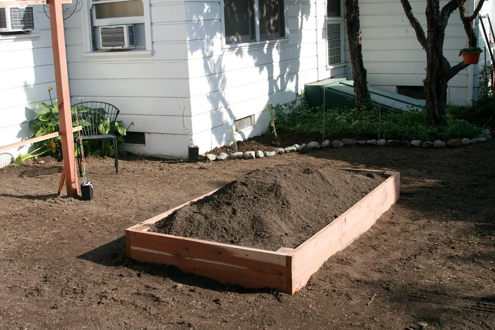

Raised Beds, Made Simple
A raised bed warms sooner, drains better, and brings the garden up to meet you. Here is how to build a simple one — and a waist-height version that lets you garden without stooping at all.

Why a raised bed is such a kindness
A raised bed is simply a frame of soil lifted above the ground, and it solves several of gardening's quiet frustrations at once. The soil inside warms earlier in spring and drains better after rain, so you can plant sooner and worry less about waterlogging. You fill it with exactly the soil you want, free of the stones and poor dirt of the native ground. Weeds are fewer and easier to reach. And, best of all, the raised edge brings the garden up toward you, easing the strain on back and knees.
Choosing the spot and the size
A little thought before you build saves a great deal later. For the spot, look for the sunniest, most level place you have — most vegetables and flowers want six or more hours of sun a day. Avoid low corners where water pools, and try to place the bed within easy reach of a hose or tap, because a raised bed will want watering more often than open ground.
For the size, the golden rule is width, not length. Keep any bed no more than four feet wide so you can comfortably reach the middle from either side without ever stepping onto the soil; stepping on it compacts the ground and undoes much of the bed's benefit. Length is up to you and your space — a four-foot by eight-foot bed is a popular, manageable size. If you are making several beds, leave a generous path of two feet or more between them, wide enough for a wheelbarrow, a kneeler, or simply comfortable passage.
Building a simple raised bed
What you'll need
- Four boards for the sides — rot-resistant cedar is ideal; untreated lumber is fine but shorter-lived
- A width of no more than four feet, so you can reach the middle from either side
- Weatherproof screws and a screwdriver or drill
- Cardboard or landscape fabric for the base
- Good topsoil mixed with compost to fill it
- A saw if your boards need cutting (or ask the lumberyard to cut them for you)
- Choose a level, sunny spot with six or more hours of sun a day.
- Cut your boards to length — a four-foot by eight-foot bed is a popular, manageable size.
- Stand the boards on edge and join the corners with screws to form a rectangle.
- Lay cardboard or landscape fabric over the ground inside to smother grass and weeds.
- Fill the bed with a mix of good topsoil and compost, roughly half and half, and rake it level.
- Water the soil well and let it settle for a day before planting.
Safety first: Boards and bags of soil are heavier and more awkward than they look. Lift with your legs rather than your back, ask for a hand with the heavy parts, and take plenty of breaks. There is no prize for rushing, and a strained back will keep you out of the garden for weeks.
A waist-height bed for easier gardening
If kneeling and bending have become difficult, a waist-height raised bed is one of the finest investments a gardener can make. It brings the soil up to a comfortable standing or sitting level, so you can tend your plants without stooping at all. For many people it is the difference between giving up gardening and enjoying it for many more years.
A waist-height bed is really a tall box with a floor, often set on sturdy legs. Because a deep box of soil is enormously heavy, these beds are usually built shallower than they are tall — a generous bed of soil perhaps a foot deep, set atop a frame that raises it to around waist level, with the space beneath either open or used for storage.
- Plan a comfortable working height — around 30 to 36 inches to the soil surface suits most people standing.
- Build or buy a sturdy frame with strong legs and good cross-bracing; a soil-filled bed is very heavy.
- Line the box with landscape fabric and add drainage holes so water can escape.
- Fill with a light mix of soil and compost — you need only about a foot of depth for most vegetables and flowers.
- Keep it well watered, as raised and elevated beds dry out faster than the open ground.
Tip: If building a sturdy, load-bearing waist-height bed feels beyond you, there is no shame at all in buying a ready-made elevated planter. Many are designed exactly for comfortable, stand-up gardening, and a well-made one will last for years.
Planting and tending your bed
Once your bed is built and filled, it is a joy to plant. Because the soil is loose and rich and never walked upon, you can grow plants closer together than in the open ground, which means more harvest from less space and fewer weeds. Group plants with similar water needs together, and tuck taller ones to the north side so they do not shade the rest. A little planning at planting time saves a good deal of shuffling later, and rewards you with a bed that is both fuller and easier to tend.
Elevated and raised beds dry out faster than open soil, so keep a closer eye on watering, especially in summer, and a good mulch over the surface will help hold moisture. Top the bed up with fresh compost each spring, as the soil level settles over time.
If building is not for you
Not everyone wants to pick up a saw, and there is no need to. The pleasures of raised-bed gardening are available without building a thing. Ready-made raised beds and elevated planters come in every size and material, many designed with comfort in mind, and most arrive as simple kits that bolt together in an afternoon with no cutting required. A well-made one will last for years and spares you the carpentry entirely.
Containers are another lovely answer, and the gentlest of all. A few large pots on a patio, a balcony, or beside the back door will grow herbs, salad leaves, tomatoes, and flowers beautifully, and they can be placed at whatever height suits you — on a bench, a table, or a sturdy stand to save your back. The same principles apply as to any raised bed: good soil, holes for drainage, sun, and regular watering, since pots dry out faster than the ground. For many people, a cluster of generous containers is all the garden they need, and all the garden they want.
What to grow in a raised bed
Raised beds suit almost everything, but they are especially kind to vegetables and herbs, which love the loose, rich, well-drained soil. For a first bed, the easiest and most rewarding crops are salad leaves, which you can snip again and again; bush beans, which crop heavily in little space; and herbs like parsley, chives, and thyme, which you will use in the kitchen all season. Tomatoes do wonderfully too, given a stake or cage for support.
Because the soil is never trodden and stays loose, you can plant more closely than in a traditional row, which means more harvest and fewer weeds. A lovely approach is to mix things up cottage-style — a few vegetables, some herbs, and a scattering of flowers like marigolds and nasturtiums, which bring in the bees and brighten the whole bed. Place taller plants on the north side so they do not cast the smaller ones into shade, and you will have a bed that is both productive and a pleasure to look at. There is a special joy, too, in stepping out the back door and gathering a handful of your own salad or herbs for supper, grown at a comfortable height and just a few steps from the kitchen.
Caring for your bed through the year
A raised bed asks only a little to keep it generous. In spring, top it up with an inch or two of fresh compost and work it gently into the surface, replacing what last year's crops drew out. Through summer, water regularly and keep the surface mulched to hold moisture and suppress weeds. In fall, clear away spent plants, add a final layer of compost or chopped leaves, and let the bed rest over winter, or tuck in a cover crop to feed the soil.
Over the years, the wooden sides will slowly weather, and eventually a board may need replacing — a simple job with a screwdriver and a new plank. A cedar bed will last many years; even untreated pine will give you a good while before it needs attention. Tended this way, a raised bed will reward you generously, season after comfortable season. And of all a raised bed's gifts, the greatest is simply that it keeps you gardening — bringing the soil up within easy reach and sparing your back and knees the strain that drives so many people to give up the hobby they love. That alone makes it worth every hour of the building. For what to grow and when, lean on the Plant Care guide and the Garden Calendar.